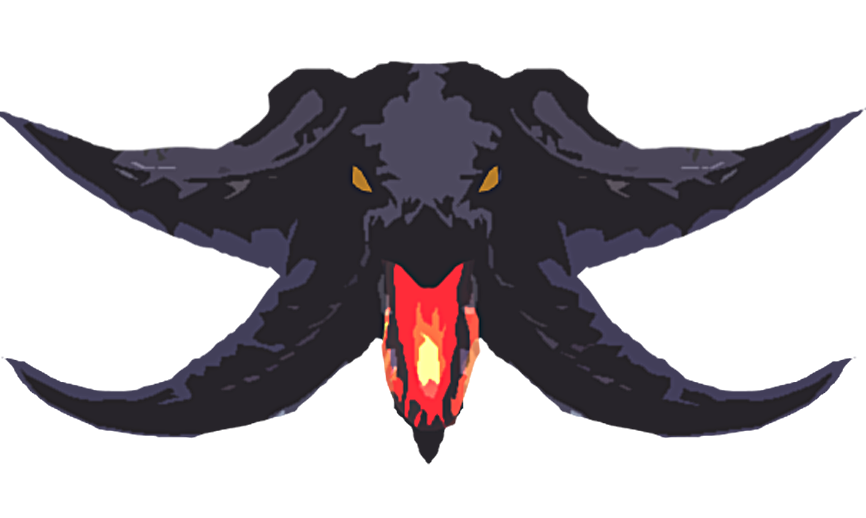

<mat-toolbar fxLayoutGap="10px" class="main-toolbar">
  <!-- Control lateral-->
  <div fxHide.gt-xs>
    <button (click)="onToggleSidenav()"><i class="fas fa-bars"></i></button>
  </div>
  <div>
    
  </div>
  <div fxHide.xs>
    <a href="" class="toolbar-title">Needhog</a>
  </div>
  <!-- Botones barra-->
  <div fxFlex fxLayoutAlign="end" fxHide.xs>
    <ul fxLayout fxLayoutGap="50px" class="navigation-item">
      <li>
        <a href="">Mounts</a>
      </li>
      <li>
        <a href="">Minions</a>
      </li>
      <li>
        <a href="">Contact</a>
      </li>
    </ul>
  </div>
</mat-toolbar>
